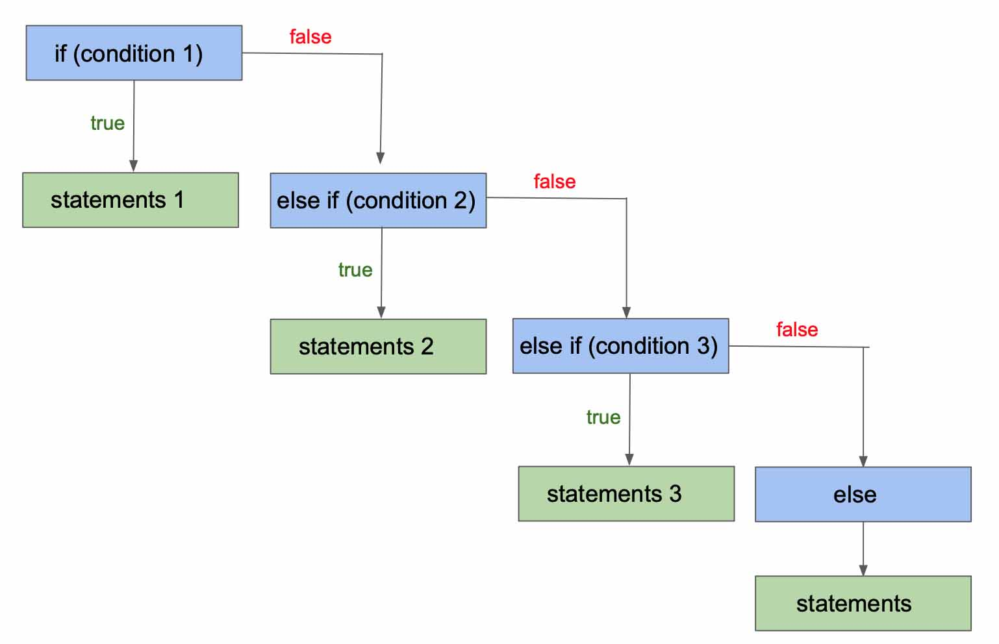

The if/else Statements
For someone that is learning JavaScript, the if/else statements really have the feeling of opening up the language. These are the introduction to decision making statements that really bring your code to life.
The if Statement
The if statement is used to execute specific code if a condition returns truthy. The most basic form of an if statement looks like this:
if (condition) {
statements
}
When this statement is being looked at, the condition in the parentheses is tested. If it returns true, the set of statements within the brackets are executed. If the condition returns falsy, the statements will be stepped over. Let's look at a basic example.
x = 10;
if (x > 5) {
numberResults1 = 'x is greater than 5'
}
Results
In this example, x is defined to be the value of 10. An if statement then checks if x is greater than 5. Since that condition is true, the condition is run. But if we also want a result that would tell us if x is less than 5, we would have to add an else statement.
The else statement
The else statement is an addition to the if statement that appears after an if statement. Without an else statement, when an if condition returns false, it is stepped over. The else statement defines what happens when the if condition returns false. The basic if/else syntax is as follows:
if (condition) {
statements 1
} else {
statements 2
}
When we run this statement is being run, first, the if condition is tested. If the condition returns true, the first set of statements are run, and the second set are stepped over. If the condition returns false, the opposite happens, where the first statements are skipped over, and the second set is executed. Let's expand on our first example.
x = numberInput1.value;
if (x > 5) {
numberResults2 = 'x is greater than 5'
} else {
numberResults2 = 'x is less than 5'
}
Results
This example is able to properly tell you if the number in the box is greater than or less than 5. But if you notice, when x = 5, the function still displays that x is less than 5. This is where we make use of a nested if statement.
Nested if and if/else statements
As you can imagine, you will often run into situations while creating JavaScript code where you will not have a straight forward decision making process. In any case, you can always nest if or if/else statements inside of other statements. This can be written to look like this:
if (condition 1) {
statements 1
} else if (condition 2) {
statements 2
} else if (condition 3) {
statements 3
}
...
else {
statements
}
This structure, in theory, could go on as long as you needed it to. When if statements start nesting, it is good to think about the whole statement as a flow chart. The below chart shows the above code as a flow chart.
Lets revisit our number example. In it's current state, the result that is given if x = 5 is incorrect. We can easily add an else if statement to adjust for that.
x = numberInput2.value;
if (x > 5) {
numberResults3 = 'x is greater than 5'
} else if (x == 5) {
numberResults3 = 'x is equal to 5'
} else {
numberResults3 = 'x is less than 5'
}
Results
With the addition of the else if statement, we have now covered our options. This specific example needs three options in the decision making process, but you can imagine situations where there are many more to make just for one output. With the inclusion of decision making statements like the if/else statements, you can really bring your website to life, reacting and responding to the user, no matter the circumstance.